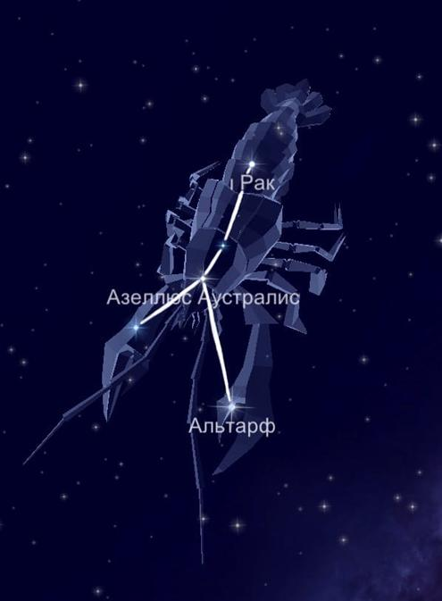

Несмотря на то, что созвездие Рак считают самым тусклым и неприметным, всё же оно стоит на 31 месте по занимаемой площади. Потому что раскинулось на 506 квадратных градусов.
Миф о происхождении.
Как и у многих других созвездий, мифологическое значение Рака неопределенно; однако наиболее распространенной версией считается легенда о том, что Рак был направлен помешать Гераклу (Геркулесу), когда тот совершал свой второй подвиг. Пока Геракл сражался с Лернейской гидрой, вечно завистливая Юнона (Гера) приказала Раку ущипнуть Геракла за ногу. Геракл растоптал Рака, но Юнона поместила Рака на небеса в качестве награды за его преданность.
Звёзды, образующие созвездие Рак.
Звездой Альфа называют Акубенс, которая представляет собой многократную систему светил. Хотя в созвездии стоит на 4 месте по яркости. Кроме того, носит названия когти, клешня или краб.
Бета-двойная звезда Альтарф. Состоит из оранжевого гиганта и его компаньона. Как оказалось, это самый яркий объект на участке. Дельта — Азеллюс Аустралис. Относится к оранжевым гигантам. К тому же это второе светило по яркости.
Гамма — белый субгигант Азеллюс Бореалис.
55 Рака выражена двойной системой из жёлтого и красного карликов.
Дзета — Тегмен представлена многократной системой. Вся структура носит название панцирь или оболочка краба.
Лямбда является бело-синим карликом главной последовательности.
Кси — это парная звезда.
Так как созвездие Рак лежит в широтах от +900 до -600, то искать его нужно именно в этой области. Считается, что лучшее время для этого в конце зимы. Из России наблюдать за Крабом можно из любой точки.
|

|